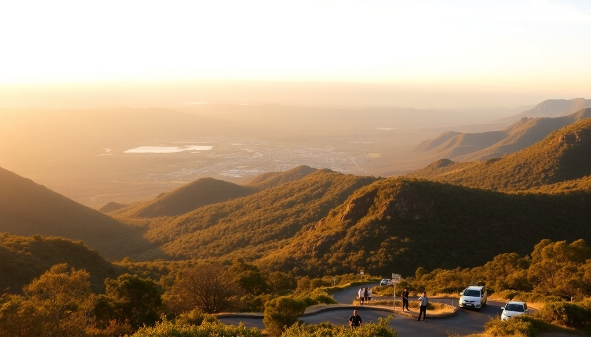

Best Day Trips from Sydney: Blue Mountains, Hunter Valley & Bondi

I’ve spent a fair bit of time in Sydney, and while the harbour is hard to beat, after a few days you start itching for something beyond the city grid. The trick is picking the right day trip — one that doesn’t burn half your day in traffic or leave you wishing you’d just stayed at the hotel pool. These three routes are the ones I keep coming back to, each with its own rhythm and a few honest warnings.
Why should you visit the Blue Mountains instead of another coastal walk?
Because it’s the most dramatic change of scenery you can get in under two hours. One minute you’re in Central Station, the next you’re standing on a sandstone cliff looking at eucalyptus haze stretching to the horizon. The air smells different — cleaner, greener.
I took the Blue Mountains Line train from Central Station to Katoomba. It’s about two hours, and the train drops you a short walk from the main lookout. No rental car needed.
- Echo Point Lookout — the classic view of the Three Sisters. Go early (before 10am) to avoid the bus crowds.
- Scenic World — the cable car and railway are fun, but the queue can hit 45 minutes on weekends. Skip it if you’re short on time and just hike instead.
- The Giant Stairway — 900-odd steps down into the valley. Your knees will complain, but the walk to Leura Forest is worth it.
- Leura village — grab a pie at Pie in the Sky Roadhouse or coffee at Josophan’s Fine Chocolates. Much quieter than Katoomba’s main strip.
One thing I’ll warn you about: the temperature drops fast in the mountains. I’ve shivered in a T-shirt in January. Bring a windproof layer even in summer.
Is the Hunter Valley worth the drive for a day trip?
It depends on how much you like wine and how long you’re willing to sit in a car. The Hunter Valley is about 2.5 hours north of Sydney — longer if you hit Friday afternoon traffic on the M1. I’d only recommend it as a day trip if you’re not the driver, because tasting and driving don’t mix well.
I booked a small-group tour through GetYourGuide that picked us up from Circular Quay at 7am. The bus was comfortable, and we were at the first cellar door by 10:30.
- Brokenwood Wines — their Semillon is the benchmark for the region. The tasting room staff actually know their stuff, not just reading off a script.
- Audrey Wilkinson Vineyard — best views in the valley. Sit on the lawn with a glass of Shiraz and watch the kangaroos hop through the vines.
- The Lovedale Brewing Co. — if you’re wined out, this place does a solid pale ale and good pub food.
- Hunter Valley Gardens — skip it unless you’re travelling with kids who need to run around. The entry fee is steep for what’s essentially a big park.
Lunch tip: Muse Kitchen in Pokolbin does a great seasonal plate. The pork belly is better than most city restaurants I’ve eaten at. Book ahead — it’s small and fills up with tour groups.
What’s the real story on the Bondi to Coogee walk?
It’s the most famous coastal walk in Sydney, and for good reason — but it’s also the most crowded. I walked it on a sunny Saturday in December and felt like I was in a conga line for the first kilometre. That said, the scenery is genuinely stunning, and the whole thing only takes 90 minutes if you keep moving.
Start at Bondi Beach — get there early (before 8am) if you want parking. I took the 333 bus from Bondi Junction station, which runs every few minutes.
- Tamarama Beach — nicknamed “Glamarama” for the crowds of oiled-up sunbathers. The surf here is dangerous; don’t swim unless you know what you’re doing.
- Bronte Beach — the best spot for a swim. The rock pool is protected and family-friendly. Grab fish and chips from Bronte Takeaway and eat on the grass.
- Clovelly Beach — a narrow, sheltered channel that’s more like a swimming pool than an ocean beach. Locals do laps here.
- Coogee Beach — the finish line. The Coogee Pavilion rooftop bar is a good spot for a beer, but expect $12 pints and loud music.
Honest opinion: the walk is great for photos and people-watching, but if you want solitude, do the Manly to Spit Bridge walk instead. It’s longer (10km) and way less crowded.
How do you get around without renting a car?
Sydney’s public transport works for the Blue Mountains and Bondi, but the Hunter Valley is a pain without wheels. Here’s the breakdown:
- Blue Mountains — train from Central Station to Katoomba. Off-peak return is about $10. The Explorer Bus runs a hop-on-hop-off loop around the main lookouts.
- Bondi to Coogee — bus 333 from Bondi Junction or walk from the city (about 45 minutes to Bondi Beach).
- Hunter Valley — book a tour. I used GetYourGuide for a small-group wine tour that included lunch and tastings. It cost $150 per person, which felt fair for the distance and the number of wineries.
If you do rent a car, avoid Budget at Sydney Airport — I waited an hour in line on a Tuesday morning. Europcar at Circular Quay was faster and friendlier.
FAQ
How much time should I budget for each day trip? For the Blue Mountains, plan for a full day — leave Sydney by 8am, return by 6pm. The Bondi to Coogee walk is a half-day (3-4 hours including lunch and a swim). Hunter Valley needs at least 10 hours door-to-door if you’re driving, or 12 hours on a tour.
What’s the best season for these trips? Autumn (March to May) is ideal — mild temps, fewer crowds, and the Hunter Valley harvest is in full swing. Summer (December to February) is hot and crowded, especially on the Bondi walk. Winter (June to August) is fine for the mountains but the valley can feel dead.
Are these trips suitable for families with young kids? Bondi to Coogee is the easiest — pushchair-friendly path and plenty of playgrounds. The Blue Mountains work if you stick to the lookouts and skip the Stairway (which is not kid-safe). Hunter Valley tours usually have age limits; check before booking.
Conclusion
- The Blue Mountains are best for hikers and anyone who wants a genuine escape from the city — take the train, skip Scenic World on weekends, and eat a pie in Leura.
- The Hunter Valley is for wine lovers who don’t mind a long drive — book a tour to avoid the drink-driving problem, and prioritise Brokenwood and Audrey Wilkinson.
- The Bondi to Coogee walk is a classic for a reason — do it early, swim at Bronte, and know that it’s a people-watching route, not a wilderness trek.